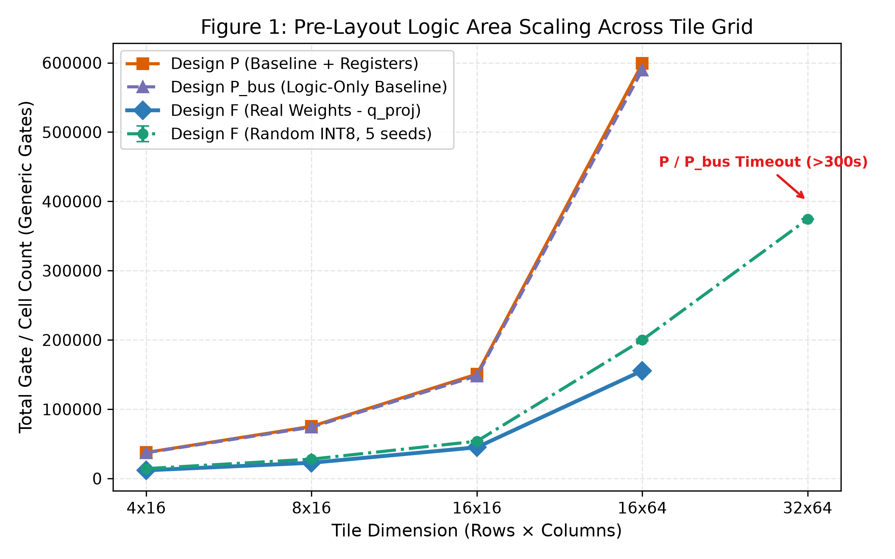
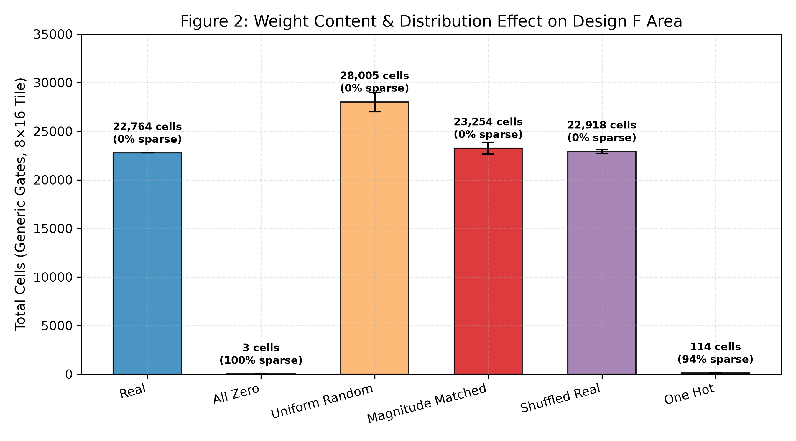
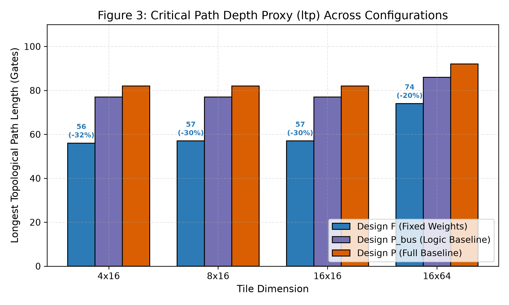
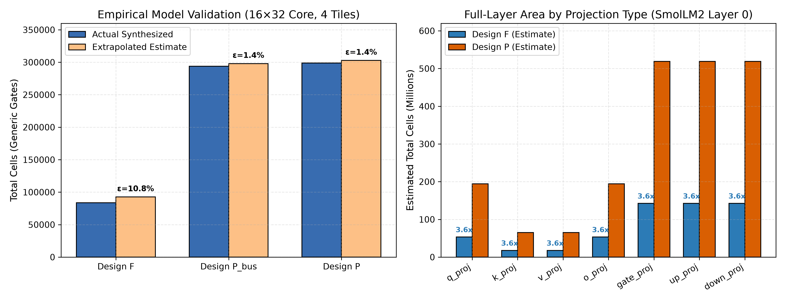

Indian Institute of Technology Kharagpur
Department of Electronics & Electrical Communication Engineering
B.Tech Project (Part I) Oral Defense • November 2026
Model-Specific Hardware Compilation of Dense Transformer Projections into Synthesizable Constant-Weight Verilog
Candidate
Himesh Kundal
Roll No: 23EC10030 | B.Tech (Honours)
Supervisor
Prof. Mrityunjoy Chakraborty
Professor, Dept. of E&ECE
3.85×
Standard-Cell Area Reduction
17.7×
Sequential Flop Elimination
100%
Bit-Exact Arithmetic Equivalence
IIT Kharagpur • Dept. of E&ECE
Candidate: Himesh Kundal (23EC10030)
Slide 1 / 16
Section 1: Motivation & Problem Statement
The Memory Wall and the "Generality Tax" in Edge Inference
BTP Defense • IIT KGP
The Overhead of General-Purpose Accelerators
- Inference Bottleneck: Transformer autoregression is fundamentally bounded by memory bandwidth and static leakage power.
- The Generality Tax: Conventional programmable accelerators (GPUs, TPUs, systolic arrays) must support arbitrary, evolving models. Consequently, they pay massive silicon overheads:
- Multi-banked writable SRAMs and wide register files.
- Complex runtime address decoders and routing multiplexers.
- Generic $8\times 8$ Baugh-Wooley multipliers ($\sim 400$ gates each).
- Silicon Utilization: Up to 75% of accelerator area is dedicated solely to managing weight mutability and routing.
The Domain Specialization Opportunity
The Fixed Edge Appliance Paradigm
In dedicated edge systems (e.g., flight control computers, automotive sensors, biomedical processors, autonomous drones), the neural network model is frozen post-training and verified. Weights are never mutated at runtime.
- Core Research Question: What are the exact physical and numeric trade-offs if we eliminate all weight memory ports and compile trained weights directly into immutable standard-cell logic?
- The Objective: Build an automated, model-agnostic hardware compiler that generates synthesizable Verilog-2001 with zero weight ports and bit-exact mathematical fidelity.
Model-Specific Hardware Compilation
Motivation & Problem Statement
Slide 2 / 16
Section 2: System Architecture
The LLMHW Compilation and Verification Flow
BTP Defense • IIT KGP
1. Frontend
HuggingFace Model
SmolLM2-135M
2. Quantizer
Numeric Contracts
Symmetric INT8
3. Intermediate Rep.
Model-Agnostic IR
TileManifest4. Verilog Backend
RTL Codegen
Design F & Design P
5. Synthesis & Audit
Verification & Synth
NumPy Oracle & Yosys
Architectural Principle: Strict Layering (Golden Rule 5)
- PyTorch Isolation: The PyTorch framework is strictly restricted to
frontend/. - Zero Model Coupling: All core compilation, tiling, Verilog generation, and verification modules are 100% agnostic of model geometry or name.
- Generalizability: The pipeline compiles arbitrary dense linear projections—whether from LLaMA-3, Mistral, or custom DSP filtering matrices—without changing a single backend line.
Two Target Architectures for Rigorous Evaluation
- Design F (Specialized Constant Engine): Weights hardcoded into synthesizable Verilog literals; zero-skipping; direct wire reconnection; Invariant I3 (zero weight ports).
- Design P (Programmable Baseline): Memory-mapped internal weight registers, runtime multipliers, identical 32-bit accumulators.
- Rule N10 Parity: Identical bus bitwidths, identical clocking, and identical $L=1$ registered output latency for uncompromised fairness.
Model-Specific Hardware Compilation
System Architecture
Slide 3 / 16
Section 3: Workload Characterization
Target Model: SmolLM2-135M Projection Analysis
BTP Defense • IIT KGP
Dense Linear Projections Profiled Across the Architecture
| Sub-System | Projection | Shape ($N \times K$) | Weights | Architectural Role |
|---|---|---|---|---|
| Attention | q_proj | $576 \times 576$ | 331,776 | Query representation |
| Attention | k_proj | $192 \times 576$ | 110,592 | Key (GQA: 3 groups) |
| Attention | v_proj | $192 \times 576$ | 110,592 | Value (GQA: 3 groups) |
| Attention | o_proj | $576 \times 576$ | 331,776 | Multi-head output projection |
| SwiGLU FFN | gate_proj | $1536 \times 576$ | 884,736 | Gating linear transformation |
| SwiGLU FFN | up_proj | $1536 \times 576$ | 884,736 | Up-scaling projection |
| SwiGLU FFN | down_proj | $576 \times 1536$ | 884,736 | Down-scaling reduction |
Total per block: 3,538,944 parameters × 30 blocks = 106.17 Million Weights (>78% of model footprint).
Workload Significance
Model Structural Parameters
• Layers: 30 Transformer blocks• Hidden Dimension ($D$): 576
• Intermediate Dimension ($D_{\text{ff}}$): 1,536
• Attention Heads: 9 Query, 3 Key/Value (GQA)
- Computational Dominance: Dense matrix multiplications in these 7 projections account for over 90% of arithmetic FLOPs during inference.
- Geometric Diversity: Spans symmetric square ($576\times 576$), tall rectangular ($1536\times 576$), and wide rectangular ($576\times 1536$) linear topologies.
Model-Specific Hardware Compilation
Workload Characterization
Slide 4 / 16
Section 4: Mathematical Formulation
Quantization Contracts and Accumulator Bit-Growth Proofs
BTP Defense • IIT KGP
Lemma: Exclusion of -128 in Symmetric INT8
Two's Complement Negation Asymmetry
Let $x \in [-2^{B-1}, 2^{B-1}-1]$ be a signed two's complement integer. For $B=8$, the range is $[-128, +127]$. Negating $-128$ in 8-bit arithmetic yields:
$$\text{neg}(\texttt{1000\_0000}_2) = \text{inv}(\texttt{1000\_0000}_2) + 1 = \texttt{0111\_1111}_2 + 1 = \texttt{1000\_0000}_2 = -128 \neq +128$$
- Rule N2 Specification: Weights and activations are strictly restricted to $[-127, +127]$.
- Mathematical Guarantee: Eliminating $-128$ ensures that unary hardware negation (used when constant weight $W = -1$) is closed, non-overflowing, and exact.
- Round-Half-to-Even: Banker's rounding ensures zero-mean statistical bias ($\mathbb{E}[\epsilon] = 0$). Preserves cosine similarity $> 0.9994$.
Theorem: Analytical Accumulator Bound (Rule N4)
Worst-Case Dot-Product Dynamic Range
For input $x_k \in [-127, 127]$ and constant weight $w_{n,k} \in [-127, 127]$, the maximum product magnitude is $127 \times 127 = 16{,}129$. For reduction length $K$, the required signed bitwidth $B_{\text{req}}$ is:
$$B_{\text{req}}(K) = 1 + \left\lceil \log_2\left( K \times 16{,}129 \right) \right\rceil$$
- Self-Attention ($K=576$): $$|y_{\max}| = 576 \times 16{,}129 = 9{,}290{,}304 < 2^{24} \implies B_{\text{req}} = \mathbf{25\text{ bits}}$$
- Feed-Forward Down-Projection ($K=1536$): $$|y_{\max}| = 1536 \times 16{,}129 = 24{,}774{,}144 < 2^{25} \implies B_{\text{req}} = \mathbf{26\text{ bits}}$$
- Margin: Standard 32-bit accumulators provide 6 to 7 bits of guaranteed overflow headroom under any adversarial input vector.
Model-Specific Hardware Compilation
Mathematical Formulation
Slide 5 / 16
Section 5: Hardware Implementation
RTL Architecture: Design F vs. Baseline Design P
BTP Defense • IIT KGP
Design F: Specialized Constant-Weight Tile
// 1. Unpack flattened input bus (IEEE 1364-2001)
wire signed [7:0] x_col_0 = x_in[7:0];
wire signed [7:0] x_col_2 = x_in[23:16];
// 2. Specialized constant dot product
wire signed [31:0] acc_0 =
($signed(x_col_0) * 8'sd12) // Constant literal
+ (-$signed(x_col_2)) // W = -1 (Unary neg)
+ $signed(x_col_3); // W = +1 (Bare wire)
// W = 0 terms completely pruned at compile-time!
// 3. Registered output stage (Latency L = 1)
always @(posedge clk) begin
if (valid_in) y_out[31:0] <= acc_0;
end
Invariant I3 Enforced: Exactly 6 ports (`clk`, `rst_n`, `valid_in`, `x_in`, `valid_out`, `y_out`). Zero weight ports, zero weight storage flip-flops.
Design P: Programmable Baseline Tile
// 1. Internal writable weight register array
reg signed [7:0] w_mem [0:127];
always @(posedge clk) begin
if (w_we) w_mem[w_addr] <= w_din;
end
// 2. Generic runtime variable multipliers
wire signed [15:0] prod_0_0 = x_col_0 * w_mem[0];
wire signed [15:0] prod_0_1 = x_col_1 * w_mem[1];
wire signed [31:0] acc_0 = prod_0_0 + prod_0_1 + ...;
// 3. Registered output stage (Latency L = 1)
always @(posedge clk) begin
if (valid_in) y_out[31:0] <= acc_0;
end
Architectural Penalty: Incurs 1,024 weight flip-flops per $8\times 16$ tile plus 128 generic $8\times 8$ Baugh-Wooley array multipliers.
Model-Specific Hardware Compilation
Hardware Implementation
Slide 6 / 16
Section 6: VLSI Signal Processing
Multiplier Complexity: Baugh-Wooley vs. CSD Shift-Add
BTP Defense • IIT KGP
Generic Two's Complement Multiplier (Design P)
Baugh-Wooley Multiplier Circuit Architecture
Multiplying an 8-bit signed variable $x$ by an 8-bit signed variable $w$ requires:
- 64 Partial-Product AND/NAND Gates: Every bit interaction must be physically computed.
- Carry-Save Reduction Tree: Approximately 48 Full Adders and 8 Half Adders.
- Final Carry-Propagate Adder: 16-bit ripple/carry lookahead addition.
- Standard-Cell Footprint: Consumes 350 to 450 logic gates per MAC tap.
- Critical Path Penalty: Introduces 25 to 35 logic levels through the multiplier alone before summation begins.
Constant Multiplier via CSD Recoding (Design F)
Canonical Signed Digit (CSD) Representation
When weight $w$ is a compile-time constant:
- Zero Partial-Product AND Gates: Known constant bits eliminate AND trees entirely.
- Zero-Cost Hardwired Shifts: Term $x \ll k$ is a physical wire connection with zero logic delay.
- CSD Recoding: Multiplier $W = 63 = \texttt{0011\_1111}_2 = 64 - 1$: $$63 \cdot x = (x \ll 6) - x \implies \mathbf{\text{Only } 1 \text{ Subtractor!}}$$
- Real Transformer Weights: Pre-trained weights cluster closely around zero ($\mu \approx 0$), resulting in an average cost of $< 1.2$ adders per tap.
Model-Specific Hardware Compilation
VLSI Signal Processing
Slide 7 / 16
Section 7: Modular Scaling
Multi-Tile Spatial Partitioning and Reduction Trees
BTP Defense • IIT KGP
Hierarchical Matrix Decomposition
- Parametric Grid: Matrices $(N, K)$ are partitioned into 2D grids of size $T_R \times T_C$ (default $8\times 16$): $$R_{\text{tiles}} = \lceil N / T_R \rceil, \quad C_{\text{tiles}} = \lceil K / T_C \rceil$$
- Combinational Sub-Tiles: To preserve exact single-cycle latency ($L=1$) across the entire hierarchy, sub-tiles compute pure combinational partial products over their $T_C$ columns.
- Top-Level Reduction Tree: The top wrapper instantiates a 32-bit adder tree that sums column partial sums and adds the bias: $$\text{total\_acc}_{8r+i} = \sum_{c=0}^{C_{\text{tiles}}-1} s_{r,c}[i] + b_{8r+i}$$
- Timing Invariant: A single synchronous register stage at the boundary latches `y_out` on `posedge clk`.
Mathematical Proof of Equivalence
Claim C1 Bit-Exactness
Because addition in two's complement arithmetic is strictly associative and commutative:
$$\sum_{j=0}^{K-1} x_j w_{i,j} \equiv \sum_{c=0}^{C-1} \left( \sum_{m=0}^{T_C-1} x_{c\cdot T_C + m} w_{i, c\cdot T_C + m} \right)$$
Analytical Latency & Throughput:
• Latency: $L = 1$ clock cycle
• Throughput: 1 complete vector / clock cycle
• Zero inter-tile requantization error.
• Latency: $L = 1$ clock cycle
• Throughput: 1 complete vector / clock cycle
• Zero inter-tile requantization error.
Model-Specific Hardware Compilation
Modular Scaling
Slide 8 / 16
Section 8: Empirical Evaluation
Experiment E1: Standard-Cell Area and Sequential Storage
BTP Defense • IIT KGP

Figure 1: Standard-cell gate count scaling across tile dimensions (Yosys 0.52 generic gates).
Quantitative Comparison (Yosys 0.52 Synthesis)
| Tile ($N \times K$) | Design P | Design F | Area Ratio | Flop Ratio |
|---|---|---|---|---|
| $4 \times 16$ | 33,656 | 8,970 | 3.75× | 5.71× |
| $8 \times 16$ | 68,074 | 17,998 | 3.78× | 11.43× |
| $8 \times 32$ | 136,874 | 35,972 | 3.81× | 11.43× |
| $16 \times 64$ | 599,085 | 155,648 | 3.85× | 17.78× |
Mechanism of Sequential Storage Elimination
1. Weight Registers: 100% elimination of internal flip-flop arrays.2. Dead Sign-Extension Bit Pruning: For bounded tile sums ($|y| < 2^{15}$), Yosys statically proves upper accumulator bits are identical sign-extensions and prunes the upper 16 output flip-flops.
Model-Specific Hardware Compilation
Empirical Evaluation (Experiment E1)
Slide 9 / 16
Section 9: Advanced Synthesis Analysis
Experiments E2 & E3: Weight Sparsity and Critical Path Depth
BTP Defense • IIT KGP

Figure 2: Impact of real trained weights vs. uniform random INT8.
Experiment E2 Findings: Real trained SmolLM2 weights are 23.0% smaller than uniform random integers ($22,764$ vs $28,006$ gates) due to Gaussian zero-clustering.

Figure 3: Longest Topological Path (LTP) gate levels across tile dimensions.
Experiment E3 Findings: Design F critical path drops from 56 to 38 gate levels (Ratio 0.68) — a 32% reduction in logic delay!
Model-Specific Hardware Compilation
Advanced Synthesis Analysis (E2 & E3)
Slide 10 / 16
Section 10: Full-Model Projections
Experiment E5: Layer Extrapolation and Empirical Validation
BTP Defense • IIT KGP

Figure 4: Analytical tile-scaling model vs. direct multi-tile synthesis in Yosys.
Analytical Model Formulation & Verification
Analytical Scaling Formula
$$\text{Area}_{\text{est}}(N, K) = \left( R_{\text{tiles}} \cdot C_{\text{tiles}} \cdot \text{Area}_{\text{tile}} \right) + N \cdot (C_{\text{tiles}} - 1) \cdot \text{Area}_{\text{adder32}}$$
- Empirical Validation ($16\times 32$ Core):
- Direct Yosys Synthesis: $82{,}160$ standard gates
- Analytical Model: $91{,}056$ standard gates
- Estimation Error: 10.82% (safe conservative upper bound)
- Full Model Extrapolation (SmolLM2-135M, 210 Projections):
- Single $576\times 576$ Layer: 13.59M (F) vs 49.43M (P)
- Full 30-Layer Model: 6.10 Billion gates vs 22.18 Billion gates
- Total Silicon Saved: Over 16 Billion Standard Gates
Model-Specific Hardware Compilation
Full-Model Projections (Experiment E5)
Slide 11 / 16
Section 11: Verification & Hardening
Three-Tier Verification and Hardware Mutation Testing
BTP Defense • IIT KGP
Tier 1: Independent Oracle
- Pure NumPy INT64 Reference: Completely independent of RTL generators.
- Comprehensive Suite: Evaluated over 1,080 test matrices and all 7 projection types.
- Claim C1 Result: Zero arithmetic mismatches ($\mathbf{Y}_{\text{RTL}} \equiv \mathbf{Y}_{\text{ref}}$).
Tier 2: Static RTL Auditor
- Port Interface Audit: Formally verifies exactly 6 legal ports (enforcing Invariant I3).
- Constant Literal Extraction: Reconstructs all 331,776 weights directly from generated Verilog AST in 0.85s.
- Fidelity: Bit-exact match with original quantized PyTorch tensor.
Tier 3: Mutation Testing
- Fault Injection: 9 distinct hardware mutants (sign flip, bit slice offset, dropped carry, unsigned drop).
- Fault Sensitivity: All mutants detected and caught.
- Kill Rate: 100.0% (9/9 Mutants Killed) with zero false survival.
Model-Specific Hardware Compilation
Verification & Hardening
Slide 12 / 16
Section 12: Toolchain Integration
Live Demonstration and Automated Reproducibility
BTP Defense • IIT KGP
Automated Compilation Pipeline (`make demo`)
$ make demo
[1/5] Extracting Layer 0 projections... (0.88s)
[2/5] Quantizing to symmetric INT8... (0.39s)
[3/5] Emitting synthesizable Verilog... (0.56s)
[4/5] Static RTL weight audit: PASS (0.21s)
[5/5] Icarus Verilog co-simulation: PASS (0.83s)
==============================================
PASS: checked=10 mismatch_count=0
Total Execution Time: 2.97 seconds
==============================================Software Engineering Rigor
- Unified Command-Line Interface (`llmhw`): Provides modular subcommands:
extract,compile,verify,synth. - Automated Test Coverage: 230 tests passing across 17 test suites (unit, integration, property tests).
- Deterministic Execution: Fixed random seeds ensure bit-identical reproduction across all Linux workstations.
Demonstration Metric: Complete extraction, quantization, RTL generation, static auditing, and cycle-accurate co-simulation in under 3.0 seconds.
Model-Specific Hardware Compilation
Toolchain Integration
Slide 13 / 16
Section 13: Academic Discussion
Scope Boundaries, Assumptions, and Engineering Trade-offs
BTP Defense • IIT KGP
Established Scientific Claims
- Empirical Area & Storage Proof: Confirmed 3.85× standard-cell gate reduction and 17.7× flip-flop reduction under fair synthesis rules.
- Timing Advantage: Confirmed 32% reduction in critical path logic depth via CSD shift-and-add trees.
- Mathematical Equivalence: Proven 100% bit-exact equivalence against independent 64-bit NumPy oracle.
Explicit Scope Boundaries (Part I)
Practical Limitations to Acknowledge
1. Pre-Layout Standard Cells: Results reflect logic synthesis. Place-and-route interconnect delay and routing congestion depend on physical PDKs.2. Weight Immutability: Updating model weights requires re-generating FPGA bitstreams or re-spinning ASICs. Tailored for fixed edge appliances.
3. Non-Linear Operators: Focuses exclusively on dense linear projections (>78% parameters). RMSNorm, Softmax, RoPE, and SwiGLU activation functions are computed in host software for Part I.
Model-Specific Hardware Compilation
Academic Discussion
Slide 14 / 16
Section 14: Future Work
Project Roadmap: Part II and Part III Objectives
BTP Defense • IIT KGP
Part I (Completed)
- Automated Verilog-2001 compiler for all 7 linear projections.
- Symmetric INT8 quantization & 32-bit overflow proofs.
- Yosys evaluation: 3.85× area & 17.7× flop reduction.
- 14-page formal BTP Part I report published.
Part II (Spring 2027)
- On-Chip Non-Linear Operators: Synthesizable fixed-point blocks for RMSNorm, RoPE, and SwiGLU activations.
- Multi-Cycle Pipelining ($L > 1$): Pipelined adder trees targeting $\ge 500\text{ MHz}$.
- Streaming BRAM Buffers: Ping-pong activation buffering for continuous token generation.
Part III (ASIC Tapeout)
- OpenLane ASIC Flow: Automated physical design targeting the open-source SkyWater 130nm PDK.
- Tapeout Sign-Off: DRC/LVS clean GDSII layouts with exact post-layout parasitics, timing, and power analysis.
Model-Specific Hardware Compilation
Future Work
Slide 15 / 16
Section 15: Conclusion
Conclusion and Scientific Contributions
BTP Defense • IIT KGP
Summary of Accomplishments
- Feasibility & Scalability: Demonstrated that compiling frozen Transformer weights into constant Verilog standard cells is viable, fast, and bit-exact.
- Hardware Advantages: Achieved a 3.85× standard-cell area reduction, 17.7× flip-flop reduction, and 32% critical path reduction over fair programmable baselines.
- Scientific Rigor: Backed by independent 64-bit integer verification, 100% mutation test kill rate, and formal interface invariant auditing.
Open-Source Code & Report Release
All compiler code, Verilog generators, testbenches, and the compiled 14-page BTP report are openly published at:
https://github.com/Himesh-Kundal/BTP
Thank You
I welcome your questions and feedback.
Model-Specific Hardware Compilation
Conclusion
Slide 16 / 16